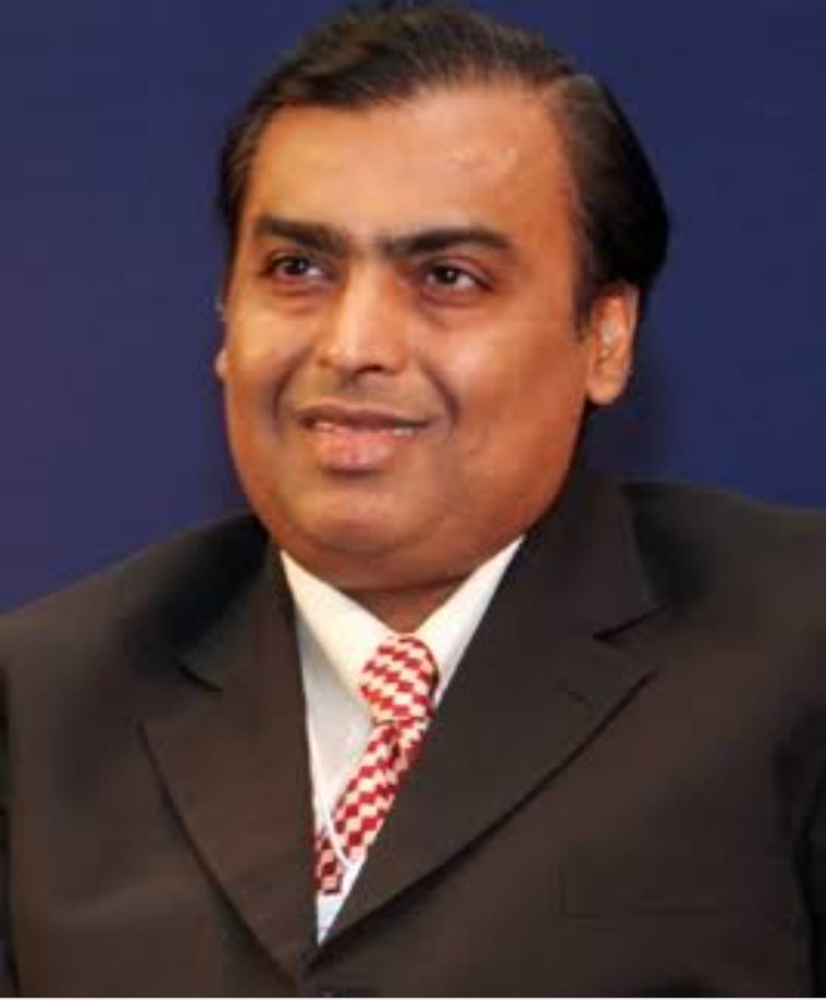

Mukesh Dhirubhai Ambani (born 19 April 1957) is an Indian billionaire businessman, and the chairman, managing director, and largest shareholder of Reliance Industries Ltd. (RIL), a Fortune Global 500 company and India's most valuable company by market value.According to Forbes, he is the richest person in Asia with a net worth of US$90 billion and the 11th richest person in the world, as of 2 December 2021.
Ambani lived only briefly in Yemen, because his father decided to move back to India in 1958 to start a trading business that focused on spices and textiles. The latter was originally named "Vimal" but later changed to "Only Vimal". His family lived in a modest two-bedroom apartment in Bhuleshwar, Mumbai until the 1970s.The family's financial status slightly improved when they moved to India but Ambani still lived in a communal society, used public transportation, and never received an allowance.Dhirubhai later purchased a 14-floor apartment block called 'Sea Wind' in Colaba, where, until recently, Ambani and his brother lived with their families on different floors.
Ambani attended the Hill Grange High School at Peddar Road, Mumbai, along with his brother and Anand Jain, who later became his close associate. After his secondary schooling, he studied at the St. Xavier's College, Mumbai.He then received a BE degree in chemical engineering from the Institute of Chemical Technology.
Ambani later enrolled for an MBA at Stanford University, but withdrew in 1980 to help his father build Reliance, which at the time was still a small but fast-growing enterprise.His father felt that real-life skills were harnessed through experiences and not by sitting in a classroom, so he called his son back to India from Stanford to take command of a yarn manufacturing project in his company.
